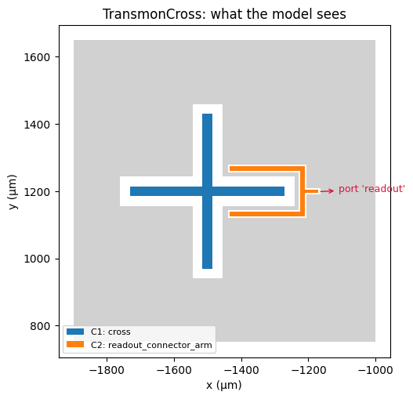
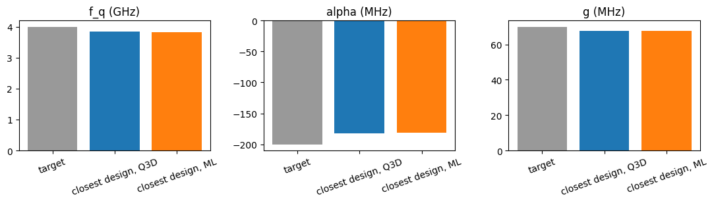
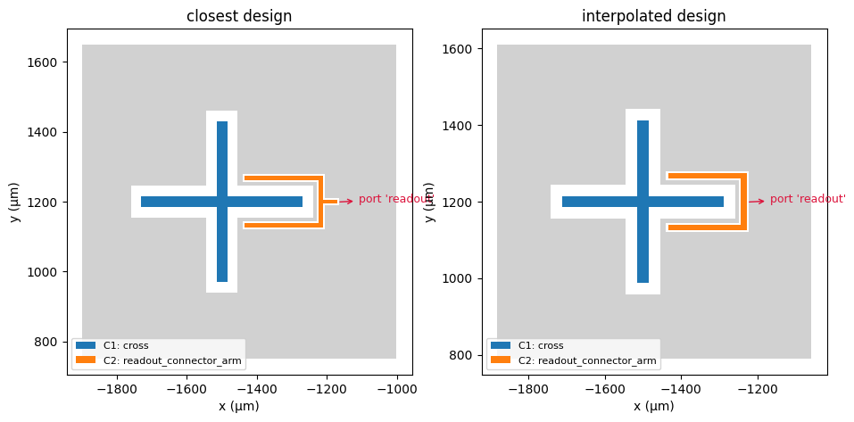
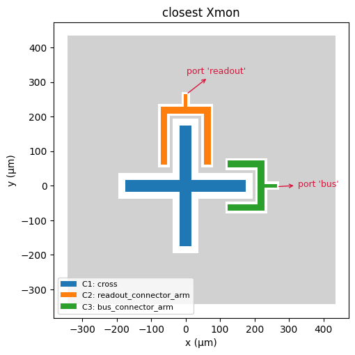
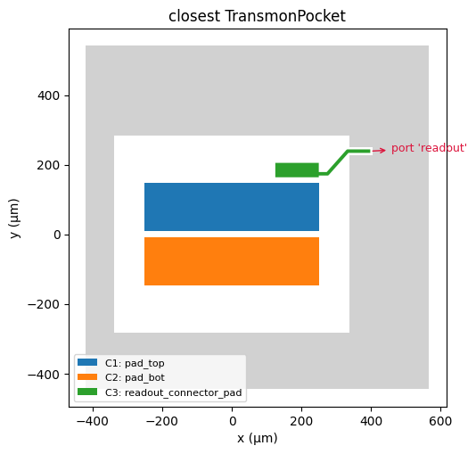
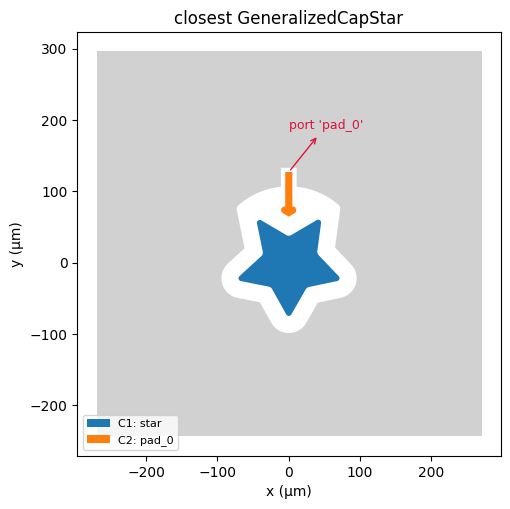

Tutorial 13: From Layout to Hamiltonian with ML#
In Tutorial 1 and Tutorial 2, checking a design against its Hamiltonian targets meant an Ansys Q3D run: a licence, a Windows machine and minutes per design. In this tutorial we walk through the same design flow, but replace the Q3D capacitance simulation with a machine-learning prediction that takes about a second. We then use it to check an interpolated design that nobody has simulated, and to query the new qubit and coupler families of SQuADDS.
Note: the ML models need the optional extras, pip install "squadds[ml,gds]".
[1]:
%load_ext autoreload
%autoreload 2
%matplotlib inline
We’ll use quantum-metal without its GUI in this tutorial, so let’s tell it that before importing anything. We’ll also silence the (many) deprecation warnings that quantum-metal and Shapely like to print.
[2]:
import logging
import os
import warnings
os.environ.setdefault("QISKIT_METAL_HEADLESS", "1")
warnings.filterwarnings("ignore")
logging.getLogger("httpx").setLevel(logging.WARNING)
The design problem#
Let’s say we want a transmon with
a qubit frequency \(f_q = 4\) GHz and an anharmonicity \(\alpha = -200\) MHz,
read out through a quarter-wave resonator at \(f_r = 6.2\) GHz with \(\kappa = 120\) kHz,
with a qubit-resonator coupling \(g = 70\) MHz.
Every one of these numbers except \(f_r\) and \(\kappa\) is set by capacitance. For a grounded transmon (an Xmon-style cross) with total capacitance \(C_\Sigma\),
and the coupling grows with the claw-to-cross capacitance \(C_g\) roughly as \(g \propto (C_g / C_\Sigma)\, (E_J/E_C)^{1/4}\).
Instead of a Q3D run per candidate, we’ll ask a model trained on about 45,000 Q3D simulations.
Query the SQuADDS Database#
Let’s first find the closest qubit-cavity design in SQuADDS, exactly as in Tutorial 1.
[3]:
from squadds import Analyzer, SQuADDS_DB
Importing SQuADDS (through scqubits) switches the inline figures to a vector format, so let’s switch them back to PNG.
[4]:
from matplotlib_inline.backend_inline import set_matplotlib_formats
set_matplotlib_formats("png")
[5]:
db = SQuADDS_DB()
db.select_system(["qubit", "cavity_claw"])
db.select_qubit("TransmonCross")
db.select_cavity_claw("RouteMeander")
db.select_resonator_type("quarter")
db.show_selections()
Warning: You are sending unauthenticated requests to the HF Hub. Please set a HF_TOKEN to enable higher rate limits and faster downloads.
WARNING:huggingface_hub.utils._http:Warning: You are sending unauthenticated requests to the HF Hub. Please set a HF_TOKEN to enable higher rate limits and faster downloads.
Selected qubit: TransmonCross
Selected cavity: RouteMeander
Selected coupler to feedline: CLT
Selected resonator type: quarter
Selected system: ['qubit', 'cavity_claw']
[6]:
df = db.create_system_df()
analyzer = Analyzer(db)
Our Hamiltonian targets:
[7]:
target_params = {
"qubit_frequency_GHz": 4,
"cavity_frequency_GHz": 6.2,
"kappa_kHz": 120,
"resonator_type": "quarter",
"anharmonicity_MHz": -200,
"g_MHz": 70,
}
[8]:
results = analyzer.find_closest(target_params=target_params, num_top=3, metric="Euclidean", display=True)
results
Time taken to add the coupled H params: 1.3436923027038574 seconds
[8]:
| index_qc | cross_to_ground | claw_to_ground | cross_to_claw | cross_to_cross | claw_to_claw | ground_to_ground | units_qubit | setup | renderer_options | ... | resonator_type | design_tool_cavity_claw | notes_cavity_claw | contributor | design_options | EC | EJ | qubit_frequency_GHz | anharmonicity_MHz | g_MHz | |
|---|---|---|---|---|---|---|---|---|---|---|---|---|---|---|---|---|---|---|---|---|---|
| 16535 | 1441 | 112.70740 | 107.65111 | 5.75841 | 112.70740 | 113.99245 | 274.49373 | fF | {'name': 'sweep_setup', 'reuse_selected_design... | {'Lj': '10nH', 'Cj': 0, '_Rj': 0, 'max_mesh_le... | ... | quarter | qiskit-metal | {} | {"group":"LFL","PI":"Eli Levenson-Falk, PhD","... | {'cavity_claw_options': {'coupler_type': 'CLT'... | 0.163509 | 12.278081 | 3.836546 | -182.146811 | 67.608428 |
| 9252 | 812 | 100.41444 | 99.80185 | 5.38260 | 100.41444 | 105.76081 | 251.82560 | fF | {'name': 'sweep_setup', 'reuse_selected_design... | {'Lj': '10nH', 'Cj': 0, '_Rj': 0, 'max_mesh_le... | ... | quarter | qiskit-metal | {} | {"group":"LFL","PI":"Eli Levenson-Falk, PhD","... | {'cavity_claw_options': {'coupler_type': 'CLT'... | 0.183089 | 12.278081 | 4.048674 | -205.519307 | 69.751635 |
| 13522 | 1180 | 105.83609 | 103.57639 | 5.68548 | 105.83609 | 109.80541 | 261.84982 | fF | {'name': 'sweep_setup', 'reuse_selected_design... | {'Lj': '10nH', 'Cj': 0, '_Rj': 0, 'max_mesh_le... | ... | quarter | qiskit-metal | {} | {"group":"LFL","PI":"Eli Levenson-Falk, PhD","... | {'cavity_claw_options': {'coupler_type': 'CLT'... | 0.173690 | 12.278081 | 3.948501 | -194.261783 | 70.474117 |
3 rows × 36 columns
Let’s keep the closest design and look at its own (Q3D-based) numbers. EC and EJ are in GHz, and cross_to_claw / cross_to_ground are the capacitances (fF) that Q3D gave the contributor of this row.
[9]:
best = results.iloc[0]
best[["qubit_frequency_GHz", "anharmonicity_MHz", "g_MHz", "cavity_frequency_GHz", "EC", "EJ",
"cross_to_claw", "cross_to_ground"]]
[9]:
qubit_frequency_GHz 3.836546
anharmonicity_MHz -182.146811
g_MHz 67.608428
cavity_frequency_GHz 6.429384
EC 0.163509
EJ 12.278081
cross_to_claw 5.75841
cross_to_ground 112.7074
Name: 16535, dtype: object
The qubit part of the design lives in design_options_qubit:
[10]:
qubit_options = best["design_options_qubit"]
qubit_options
[10]:
{'pos_x': '-1500um',
'pos_y': '1200um',
'orientation': '-90',
'chip': 'main',
'layer': '1',
'connection_pads': {'readout': {'connector_type': '0',
'claw_length': '210um',
'ground_spacing': '10um',
'claw_width': '15um',
'claw_gap': '5.1um',
'claw_cpw_length': '40um',
'claw_cpw_width': '10um',
'connector_location': '90'}},
'cross_width': '30um',
'cross_length': '230um',
'cross_gap': '30um',
'hfss_inductance': 9.7e-09,
'hfss_capacitance': 0,
'hfss_resistance': 0,
'hfss_mesh_kw_jj': 7e-06,
'q3d_inductance': '10nH',
'q3d_capacitance': 0,
'q3d_resistance': 0,
'q3d_mesh_kw_jj': 7e-06,
'gds_cell_name': 'my_other_junction',
'aedt_q3d_inductance': 1e-08,
'aedt_q3d_capacitance': 0,
'aedt_hfss_inductance': 9.7e-09,
'aedt_hfss_capacitance': 0}
Render the design in quantum-metal#
We pass these options to a TransmonCross (as in Tutorial 1) and rebuild the design. No GUI window opens since we are running headless.
[11]:
from qiskit_metal import designs
from qiskit_metal.qlibrary.qubits.transmon_cross import TransmonCross
[12]:
design = designs.DesignPlanar({}, overwrite_enabled=True)
qubit = TransmonCross(design, "qubit", options=qubit_options)
design.rebuild()
The capacitance models read a GDS with two layers: the ground plane on layer 1/0 and every signal conductor on layer 1/10. Each connected body is one conductor, and nets are never merged. render_gds exports a quantum-metal design in that convention. It is the same rendering MLSimulator uses internally.
[13]:
from pathlib import Path
from squadds.ml.capacitance.bridge import render_gds
Path("tutorial13_files").mkdir(exist_ok=True)
qubit_gds = render_gds(design, "tutorial13_files/transmon_cross.gds")
qubit_gds
[13]:
PosixPath('tutorial13_files/transmon_cross.gds')
Look at the metal (and the ports) first#
Since the input to the model is the layout, let’s look at what the model sees before we ask for any number. prepare_layout reads a GDS exactly the way the predictor does: the ground is one net, and every conductor body gets a name C1, C2, … in file order.
[14]:
from squadds.ml.capacitance import prepare_layout
qubit_layout = prepare_layout(str(qubit_gds))
qubit_layout.names
[14]:
['C1', 'C2']
C1 and C2 are not very telling, so here is a small helper that names every body after the quantum-metal shape it overlaps the most.
[15]:
from shapely import affinity
def name_conductors(design, layout):
"""{predictor name: Qiskit Metal shape name} for every conductor body."""
shapes = {}
for table in ("poly", "path"):
df = design.qgeometry.tables[table]
for row in df[~df["subtract"].astype(bool) & ~df["helper"].astype(bool)].itertuples():
g = row.geometry if table == "poly" else row.geometry.buffer(row.width / 2, cap_style=2)
shapes[row.name] = affinity.scale(g, 1000, 1000, origin=(0, 0)) # Metal mm -> GDS µm
names = {}
for name, body in zip(layout.names, layout.conductors):
names[name] = max(shapes, key=lambda s: body.intersection(shapes[s]).area)
return names
And one that draws the ground in grey (its etch in white), every conductor in its own color, and the quantum-metal pins of the component as red arrows. The pins are the ports, where a resonator, a feed line or a bus attaches in the full chip.
[16]:
import matplotlib.pyplot as plt
def plot_layout(layout, names=None, pins=None, title="", ax=None):
"""Ground in grey, every conductor in its own color, and the component's pins (ports) as red arrows."""
ax = ax or plt.subplots(figsize=(5.5, 5.5))[1]
for poly in getattr(layout.ground, "geoms", [layout.ground]):
ax.fill(*poly.exterior.xy, color="0.82", lw=0)
for hole in poly.interiors:
ax.fill(*hole.xy, color="white", lw=0)
for k, (name, body) in enumerate(zip(layout.names, layout.conductors)):
for i, poly in enumerate(getattr(body, "geoms", [body])):
label = f"{name}: {(names or {}).get(name, name)}" if i == 0 else None
ax.fill(*poly.exterior.xy, color=plt.cm.tab10(k % 10), lw=0, label=label)
for pin_name, pin in (pins or {}).items():
(x, y), (dx, dy) = 1e3 * pin["middle"], 60 * pin["normal"]
ax.annotate(f"port '{pin_name}'", xy=(x, y), xytext=(x + dx, y + dy), color="crimson", fontsize=9,
arrowprops=dict(arrowstyle="<-", color="crimson"))
ax.set_aspect("equal")
ax.set(xlabel="x (µm)", ylabel="y (µm)", title=title)
ax.legend(loc="lower left", fontsize=8)
return ax
[17]:
qubit_names = name_conductors(design, qubit_layout)
plot_layout(qubit_layout, qubit_names, qubit.pins, title="TransmonCross: what the model sees");

Great! Two conductors and the ground: the cross (the qubit island) and the claw of the readout connector. The junction goes from the cross to ground and is not part of the capacitance problem. The readout port is where the resonator attaches. That is the metal we expect, so now we can ask for numbers.
Predict the capacitance matrix with MLSimulator#
MLSimulator has the same call and the same result shape as the capacitance path of AnsysSimulator (Tutorial 2), so the rest of the SQuADDS workflow does not care where the numbers came from. Every result carries a fidelity label, "ml:QCap" or "ml:QCap-Fast", so a prediction can never be mistaken for a simulation.
How far can we trust it? The default model, QCap, runs two thin-film method-of-moments field solves and corrects them with a small graph neural network. It was trained on all the data, so it has no held-out score of its own. The paper’s version of it (same recipe, networks trained on the TRAIN split only) scores against Q3D (median relative error over the coupling entries, with MAE and RMSE):
test set |
median % |
MAE (fF) |
RMSE (fF) |
|---|---|---|---|
test, families seen in training (4,009 layouts) |
0.177 % |
0.0203 |
0.025 |
a whole family held out of training (4,071 layouts) |
0.408 % |
0.049 |
0.059 |
zero-shot, unseen kinds of layouts (1,878 layouts) |
0.587 % |
1.092 |
1.152 |
fresh check of QCap on 39 new layouts |
1.05 % |
0.132 |
0.188 |
It costs about 1 s per small component (median 0.845 s on 2 CPUs of an x86 cluster node, 1.37 s on an Apple M5 Pro laptop for up to 4 conductors). It was trained on one stack: silicon (\(\varepsilon_r = 11.45\)), 350 µm thick, zero-thickness metal. For another substrate, pass eps_r and thickness_um to predict: QCap then solves its physics prior on your stack.
Note: if you have a local copy of the models, point SQUADDS_CAPML_MODELS at its folder and nothing is downloaded.
[18]:
from squadds.ml.capacitance.bridge import MLSimulator
[19]:
ml = MLSimulator()
ml
[19]:
MLSimulator(model='QCap')
We can hand it the quantum-metal component directly:
[20]:
ml_result = ml.predict(qubit)
ml_result["fidelity"], ml_result["timing"]
[20]:
('ml:QCap',
{'render_s': 0.007670043996768072,
'prepare_s': 1.1577998520806432e-05,
'load_s': 0.6325546239968389,
'geometry_s': 0.4905749980098335,
'prior_s': 1.8774226699897554,
'prior_levels_s': {'1.5': 0.9462087409920059, '3': 0.9275481049990049},
'network_s': 0.005776858000899665,
'total_s': 2.3737745260004885,
'cache_hits': {'embedding': False, 'prior': False},
'threads': 2,
'wall_s': 8.11429808298999})
The first call of a session is slow: it loads the model and compiles the numerical kernels once (load_s and most of geometry_s above). Let’s ask again. SQuADDS remembers layouts it has already seen, so a repeated design is answered from a cache almost instantly. A new layout takes about a second, as we’ll see below.
[21]:
ml_result = ml.predict(qubit)
round(ml_result["timing"]["wall_s"], 2)
[21]:
0.03
The result has the familiar design / sim_options / sim_results keys of AnsysSimulator, with the sim_results named just like the SQuADDS database rows:
[22]:
ml_result["sim_results"]
[22]:
{'cross_to_cross': 120.95360565185547,
'cross_to_claw': 5.7873616218566895,
'cross_to_ground': 113.3360824584961,
'claw_to_claw': 114.9999771118164,
'claw_to_ground': 108.2668685913086,
'ground_to_ground': 270.2359924316406,
'maxwell_matrix': {'C_G_G': 270.2359924316406,
'C_G_S': -113.3360824584961,
'C_G_N': -108.2668685913086,
'C_S_G': -113.3360824584961,
'C_S_S': 120.95360565185547,
'C_S_N': -5.7873616218566895,
'C_N_G': -108.2668685913086,
'C_N_S': -5.7873616218566895,
'C_N_N': 114.9999771118164},
'units': 'fF'}
It also tells us whether the predicted matrix passed its physics checks (symmetry, signs, closure, positive definiteness) and whether anything looked unusual about the layout:
[23]:
ml_result["checks"], ml_result["warnings"]
[23]:
({'symmetric_max_abs': 0.0,
'symmetric': True,
'diagonal_positive': True,
'offdiag_all_negative': True,
'closure_min_row_sum': 0.945746898651123,
'closure': True,
'signal_block_min_eig': 111.46872118089837,
'positive_definite': True,
'passed': True},
[])
The full Maxwell matrix (fF) is in sim_results["maxwell_matrix"], keyed by the conductor labels. Let’s put it in a DataFrame with readable names. The diagonal entries are positive self capacitances, and the off-diagonal entries are \(-C^{\rm mutual}_{ij}\).
[24]:
import pandas as pd
def maxwell_df(result):
"""The signed Maxwell matrix (fF) of an MLSimulator result, named like the SQuADDS sim_results."""
nets = result["net_names"]
M = result["sim_results"]["maxwell_matrix"]
names = list(nets.values())
return pd.DataFrame([[M[f"C_{a}_{b}"] for b in nets] for a in nets], index=names, columns=names)
maxwell_df(ml_result).round(3)
[24]:
| ground | cross | claw | |
|---|---|---|---|
| ground | 270.236 | -113.336 | -108.267 |
| cross | -113.336 | 120.954 | -5.787 |
| claw | -108.267 | -5.787 | 115.000 |
How close is it to Q3D?#
This design is in the database, so we can compare the prediction with the row’s own Q3D numbers. Here is a helper that lines them up in fF and in %. It summarizes the mutual (off-diagonal) entries with the median relative error, the MAE and the RMSE, the metric of the accuracy table above.
[25]:
import numpy as np
def compare(row, result):
"""Q3D (database row) vs ML for every capacitance both carry, in fF and in %."""
sr = result["sim_results"]
keys = [k for k in sr if k in row.index and k not in ("units", "maxwell_matrix") and pd.notna(row[k])]
out = pd.DataFrame({"Q3D (fF)": [float(row[k]) for k in keys], "ML (fF)": [sr[k] for k in keys]}, index=keys)
out["ML - Q3D (fF)"] = out["ML (fF)"] - out["Q3D (fF)"]
out["ML - Q3D (%)"] = 100 * out["ML - Q3D (fF)"] / out["Q3D (fF)"]
mutual = [k for k in keys if k.split("_to_")[0] != k.split("_to_")[1]]
d = out.loc[mutual, "ML - Q3D (fF)"]
pct = 100 * (d / out.loc[mutual, "Q3D (fF)"]).abs()
print(f"mutual entries: median {pct.median():.2f} % | MAE {d.abs().mean():.3f} fF | "
f"RMSE {np.sqrt((d**2).mean()):.3f} fF | n = {len(mutual)}")
return out.round(3)
[26]:
compare(best, ml_result)
mutual entries: median 0.56 % | MAE 0.424 fF | RMSE 0.508 fF | n = 3
[26]:
| Q3D (fF) | ML (fF) | ML - Q3D (fF) | ML - Q3D (%) | |
|---|---|---|---|---|
| cross_to_cross | 112.707 | 120.954 | 8.246 | 7.316 |
| cross_to_claw | 5.758 | 5.787 | 0.029 | 0.503 |
| cross_to_ground | 112.707 | 113.336 | 0.629 | 0.558 |
| claw_to_claw | 113.992 | 115.000 | 1.008 | 0.884 |
| claw_to_ground | 107.651 | 108.267 | 0.616 | 0.572 |
| ground_to_ground | 274.494 | 270.236 | -4.258 | -1.551 |
The coupling we care about most, cross to claw, agrees closely with Q3D. Keep in mind that this is one design, so it is a sanity check, not an accuracy score (the table above is the accuracy score). The comparison is also not quite like for like.
Why this comparison is not like for like
The SQuADDS
TransmonCrossrows were simulated by their contributor with their own Q3D setup. Their rows record no layer stack. The quantum-metal / SQuADDS default substrate is 750 µm thick, while the model serves 350 µm, so the difference above mixes the model error with this stack difference.The rendered chip is not the contributor’s chip either:
render_gdsdraws a square ground domain around the component. Entries that involve the ground feel that most. The cross-to-claw coupling is the most like-for-like number.In these database rows
cross_to_crossis stored equal tocross_to_ground, so it is not the Maxwell diagonal the model predicts. That is why the self terms are left out of the summary line. (SQuADDS builds theTransmonCross\(C_\Sigma\) fromcross_to_groundandcross_to_claw, so the Hamiltonian below is not affected.)These
TransmonCrossgeometries are not in the model’s training data (the planar capacitance dataset has its ownXmonfamily, which we’ll meet below).
From capacitance to the Hamiltonian#
Now let’s turn the prediction into Hamiltonian parameters with the same functions SQuADDS uses for Q3D rows (squadds.calcs.transmon_cross). For the TransmonCross, SQuADDS uses \(C_\Sigma = C_{\rm cross,ground} + C_{\rm cross,claw}\), so
We keep the Josephson energy \(E_J\) that SQuADDS picked for our target (the EJ column), get \(f_q\) and \(\alpha\) from scqubits, and compute \(g\) from the capacitance matrix with the resonator frequency of the closest design:
[27]:
from squadds.calcs.transmon_cross import get_transmon_E01_alpha
from squadds.ml.capacitance.bridge import EC_MHz, g_MHz
[28]:
EJ = float(best["EJ"]) # GHz
f_r = float(best["cavity_frequency_GHz"])
EC_ml = EC_MHz(ml_result) # MHz
f_q_ml, alpha_ml = get_transmon_E01_alpha(EJ, EC_ml / 1e3)
g_ml = g_MHz(ml_result, EJ_GHz=EJ, f_r_GHz=f_r, res_type="quarter")
Let’s line up the target, the database row (Q3D) and the ML prediction:
[29]:
hamiltonian = pd.DataFrame(
{
"target": [None, target_params["qubit_frequency_GHz"], target_params["anharmonicity_MHz"], target_params["g_MHz"]],
"closest design, Q3D": [1e3 * best["EC"], best["qubit_frequency_GHz"], best["anharmonicity_MHz"], best["g_MHz"]],
"closest design, ML": [EC_ml, f_q_ml, alpha_ml, g_ml],
},
index=["E_C (MHz)", "f_q (GHz)", "alpha (MHz)", "g (MHz)"],
)
hamiltonian.round(3)
[29]:
| target | closest design, Q3D | closest design, ML | |
|---|---|---|---|
| E_C (MHz) | NaN | 163.509 | 162.606 |
| f_q (GHz) | 4.0 | 3.837 | 3.826 |
| alpha (MHz) | -200.0 | -182.147 | -181.076 |
| g (MHz) | 70.0 | 67.608 | 67.664 |
Awesome! In about a second we went from a layout to the qubit’s Hamiltonian, and it agrees with what Q3D told the database within the differences we saw in the capacitances. Let’s plot the comparison:
[30]:
fig, axes = plt.subplots(1, 3, figsize=(11, 3.2))
for ax, key in zip(axes, ["f_q (GHz)", "alpha (MHz)", "g (MHz)"]):
vals = hamiltonian.loc[key]
ax.bar(vals.index, vals.values, color=["0.6", "tab:blue", "tab:orange"])
ax.set_title(key)
ax.tick_params(axis="x", rotation=20)
fig.tight_layout()

An interpolated design that nobody has simulated#
The closest design is never exactly on target, so Tutorial 1 used the physics-inspired ScalingInterpolator to scale the geometry towards our targets. That gives a new design, and in Tutorial 2 the next step was a Q3D run to check it. Let’s check it with the model instead.
[31]:
from squadds.interpolations.physics import ScalingInterpolator
[32]:
interpolator = ScalingInterpolator(analyzer, target_params)
design_df = interpolator.get_design()
design_df
==================================================
Kappa scaling: 1.0025568750809213
g scaling: 0.9969935576236629
alpha scaling: 1.007757814178385
resonator scaling: 1.0055694290983872
==================================================
[32]:
| coupler_type | design_options_qubit | design_options_cavity_claw | setup_qubit | setup_cavity_claw | design_options | |
|---|---|---|---|---|---|---|
| 0 | CLT | {'pos_x': '-1500um', 'pos_y': '1200um', 'orien... | {'claw_opts': {'connection_pads': {'readout': ... | None | {'name': 'sweep_setup', 'reuse_selected_design... | {'cavity_claw_options': {'coupler_type': 'CLT'... |
The interpolated row holds the whole qubit-cavity system. MLSimulator predicts single components, so we hand Analyzer.predict_capacitance the qubit part and tell it which component class to build:
[33]:
interpolated_qubit = pd.DataFrame(
[{"design_options": design_df.iloc[0]["design_options_qubit"], "component_class": "TransmonCross"}]
)
interpolated_ml = analyzer.predict_capacitance(interpolated_qubit)
interpolated_ml.filter(regex="cross_to_claw_ml|cross_to_ground_ml|fidelity|ml_total_s")
[33]:
| cross_to_claw_ml | cross_to_ground_ml | fidelity | ml_total_s | |
|---|---|---|---|---|
| 0 | 5.313089 | 103.74128 | ml:QCap | 1.381011 |
Before we trust its numbers, let’s look at the interpolated cross next to the closest one. We’ll wrap the render-and-plot steps from above in one small function, since we’ll use it a few more times.
[34]:
from squadds.ml.capacitance.bridge import build_component
def look_at(component, title, ax=None):
"""Render a component to GDS, then plot its metal and ports (returns the GDS path)."""
gds = render_gds(component.design, Path("tutorial13_files") / (title.replace(" ", "_") + ".gds"))
layout = prepare_layout(str(gds))
plot_layout(layout, name_conductors(component.design, layout), component.pins, title=title, ax=ax)
return gds
[35]:
interpolated_component = build_component(interpolated_qubit.iloc[0])
fig, axes = plt.subplots(1, 2, figsize=(11, 5.5))
look_at(qubit, "closest design", ax=axes[0])
look_at(interpolated_component, "interpolated design", ax=axes[1]);

Now the Hamiltonian of the interpolated design, with the same \(E_J\):
[36]:
interpolated_result = interpolated_ml.iloc[0]["ml_result"]
EC_interp = EC_MHz(interpolated_result)
f_q_interp, alpha_interp = get_transmon_E01_alpha(EJ, EC_interp / 1e3)
g_interp = g_MHz(interpolated_result, EJ_GHz=EJ, f_r_GHz=target_params["cavity_frequency_GHz"], res_type="quarter")
hamiltonian["interpolated design, ML"] = [EC_interp, f_q_interp, alpha_interp, g_interp]
hamiltonian.round(3)
[36]:
| target | closest design, Q3D | closest design, ML | interpolated design, ML | |
|---|---|---|---|---|
| E_C (MHz) | NaN | 163.509 | 162.606 | 177.620 |
| f_q (GHz) | 4.0 | 3.837 | 3.826 | 3.991 |
| alpha (MHz) | -200.0 | -182.147 | -181.076 | -198.960 |
| g (MHz) | 70.0 | 67.608 | 67.664 | 64.058 |
Interesting! The interpolation pulled \(f_q\) and \(\alpha\) right onto our targets, but by the model’s numbers \(g\) came out a few MHz short of 70 MHz. That is exactly the kind of thing we want to catch before we spend a Q3D run (a slightly longer claw would be our next try).
This check used to need a Q3D run per candidate. Now that it takes about a second, we can check every candidate we are curious about, and keep the Q3D (or Palace) runs for the one design we are about to fabricate.
New families: the planar capacitance dataset#
The models were trained on the planar capacitance dataset (Tutorial 12): about 45,000 Q3D-labelled layouts of interdigital, concentric, star and shielded capacitors, Xmon and TransmonPocket qubits and more, every one with its full capacitance matrix. SQuADDS can show these rows in its usual format as a second data source. It is on by default, and a local copy works too,
pointed to by the environment variable SQUADDS_PLANAR_CAP_DATA.
[37]:
db = SQuADDS_DB(sources=("default", "planar_capacitance"))
db.enabled_sources()
[37]:
['default', 'planar_capacitance']
The new configurations show up next to the existing ones:
[38]:
db.get_configs()
['qubit-TransmonCross-cap_matrix',
'cavity_claw-RouteMeander-eigenmode',
'coupler-NCap-cap_matrix',
'coupler-CapNInterdigitalTee-cap_matrix',
'coupler-GeneralizedCapNInterdigital-cap_matrix',
'coupler-GeneralizedCapConcentric-cap_matrix',
'coupler-GeneralizedCapStar-cap_matrix',
'coupler-ShieldedCapConcentric-cap_matrix',
'qubit-Xmon-cap_matrix',
'qubit-TransmonPocket-cap_matrix']
An Xmon with a target frequency and anharmonicity#
The Xmon rows are a cross in a ground pocket with one or two claws. For these, SQuADDS takes \(C_\Sigma\) as the full Maxwell diagonal of the cross, so a second claw is counted too.
[39]:
db.unselect_all()
db.select_system("qubit")
db.select_qubit("Xmon")
xmon_df = db.create_system_df()
xmon_df.shape
[39]:
(197, 41)
[40]:
analyzer = Analyzer(db)
xmon_results = analyzer.find_closest({"qubit_frequency_GHz": 4.5, "anharmonicity_MHz": -200}, num_top=3)
xmon_results[["design_id", "qubit_frequency_GHz", "anharmonicity_MHz", "EC", "C_sigma_fF", "cross_to_claw"]]
[40]:
| design_id | qubit_frequency_GHz | anharmonicity_MHz | EC | C_sigma_fF | cross_to_claw | |
|---|---|---|---|---|---|---|
| 32 | ref/exp13/q3d_cap_0563 | 4.505992 | -200.608575 | 0.181315 | 106.832206 | 6.345272 |
| 64 | ref/exp13/q3d_cap_0632 | 4.509329 | -200.938054 | 0.181596 | 106.666675 | 1.557704 |
| 95 | ref/exp13/q3d_cap_0673 | 4.483355 | -198.382118 | 0.179415 | 107.963389 | 1.768689 |
Let’s look at the closest Xmon first. build_component rebuilds a database row with its quantum-metal class:
[41]:
best_xmon = xmon_results.iloc[0]
look_at(build_component(best_xmon), "closest Xmon");

And now the prediction, with exactly the call we would use for AnsysSimulator(analyzer, best_device).simulate() in Tutorial 2:
[42]:
xmon_ml = MLSimulator(analyzer, best_xmon).simulate()
xmon_ml["fidelity"], round(xmon_ml["timing"]["wall_s"], 2)
[42]:
('ml:QCap', 1.8)
[43]:
compare(best_xmon, xmon_ml)
mutual entries: median 0.49 % | MAE 0.247 fF | RMSE 0.348 fF | n = 6
[43]:
| Q3D (fF) | ML (fF) | ML - Q3D (fF) | ML - Q3D (%) | |
|---|---|---|---|---|
| cross_to_cross | 106.832 | 107.270 | 0.437 | 0.409 |
| cross_to_claw | 6.345 | 6.329 | -0.016 | -0.249 |
| cross_to_bus_claw | 3.386 | 3.368 | -0.018 | -0.519 |
| cross_to_ground | 95.552 | 95.991 | 0.438 | 0.459 |
| claw_to_claw | 88.970 | 88.972 | 0.003 | 0.003 |
| claw_to_bus_claw | 0.300 | 0.294 | -0.006 | -1.895 |
| claw_to_ground | 81.752 | 81.381 | -0.371 | -0.454 |
| bus_claw_to_bus_claw | 66.120 | 65.814 | -0.306 | -0.462 |
| bus_claw_to_ground | 62.008 | 61.378 | -0.630 | -1.017 |
| ground_to_ground | 279.653 | 277.604 | -2.049 | -0.733 |
Careful: every row of the planar capacitance dataset was part of QCap’s training data, so this agreement is a consistency check of the plumbing (rows, rendering, naming), not a measure of accuracy. For accuracy, look at the table further up.
Here is the charging energy from the predicted matrix, with every claw included:
[44]:
from squadds.ml.capacitance.bridge import EC_MHz_from_matrix
C_xmon = maxwell_df(xmon_ml)
EC_MHz_from_matrix(C_xmon.values, C_xmon.index, "cross"), 1e3 * best_xmon["EC"]
[44]:
(180.57507032099102, 181.31451147234225)
A floating transmon: TransmonPocket#
A TransmonPocket has two pads and no grounded island, so the qubit is the differential mode of the two pads. With the coupler pads held at ground (their resonators are much larger capacitors),
where \(C\) is the two-pad block of the Maxwell matrix. SQuADDS uses this for TransmonPocket targets.
[45]:
db.select_qubit("TransmonPocket")
pocket_df = db.create_system_df()
analyzer = Analyzer(db)
pocket_results = analyzer.find_closest({"qubit_frequency_GHz": 5.3, "anharmonicity_MHz": -250}, num_top=3)
pocket_results[["design_id", "qubit_frequency_GHz", "anharmonicity_MHz", "EC", "C_sigma_fF"]]
[45]:
| design_id | qubit_frequency_GHz | anharmonicity_MHz | EC | C_sigma_fF | |
|---|---|---|---|---|---|
| 275 | ref/exp14/q3d_cap_0446 | 5.272124 | -247.075229 | 0.222108 | 87.210713 |
| 62 | ref/exp14/q3d_cap_0233 | 5.342846 | -254.535302 | 0.228404 | 84.806791 |
| 46 | ref/exp14/q3d_cap_0217 | 5.451886 | -266.309057 | 0.238302 | 81.284464 |
[46]:
best_pocket = pocket_results.iloc[0]
look_at(build_component(best_pocket), "closest TransmonPocket");

[47]:
pocket_ml = MLSimulator(analyzer, best_pocket).simulate()
C_pocket = maxwell_df(pocket_ml)
C_pocket.round(3)
[47]:
| ground | pad_top | pad_bot | readout_pad | |
|---|---|---|---|---|
| ground | 189.179 | -56.193 | -61.100 | -28.756 |
| pad_top | -56.193 | 125.519 | -52.692 | -13.646 |
| pad_bot | -61.100 | -52.692 | 118.470 | -1.220 |
| readout_pad | -28.756 | -13.646 | -1.220 | 44.344 |
[48]:
EC_MHz_from_matrix(C_pocket.values, C_pocket.index, ["pad_top", "pad_bot"]), 1e3 * best_pocket["EC"]
[48]:
(221.99927692671767, 222.10836985197966)
A coupler with a capacitance target: GeneralizedCapStar#
Couplers don’t have a Hamiltonian of their own, so we query them with a capacitance target directly. Let’s ask for a star coupler with about 2 fF between the star and its first pad.
Some star rows (all of one collection and a few others) were labelled on a GDS that their stored options do not reproduce exactly. They carry geometry_reproducible = False, and we leave them out whenever we want to rebuild a design from its options.
[49]:
db.unselect_all()
db.select_system("coupler")
db.select_coupler("GeneralizedCapStar")
star_df = db.create_system_df()
analyzer = Analyzer(db)
analyzer.df = analyzer.df[analyzer.df["geometry_reproducible"].fillna(True).astype(bool)]
len(star_df), len(analyzer.df)
WARNING:DeprecationWarning: select_coupler() is deprecated and will be removed in a future release. Use select_resonator_type() instead.
[49]:
(3411, 1758)
[50]:
star_results = analyzer.find_closest({"star_to_pad_0": 2.0}, num_top=3)
star_results[["design_id", "star_to_pad_0", "star_to_ground", "pad_0_to_ground"]]
[50]:
| design_id | star_to_pad_0 | star_to_ground | pad_0_to_ground | |
|---|---|---|---|---|
| 1210 | ref/exp11/q3d_cap_1355 | 2.006605 | 35.361054 | 8.802020 |
| 535 | ref/exp11/q3d_cap_0593 | 1.985574 | 25.130047 | 10.070085 |
| 341 | ref/exp11/q3d_cap_0380 | 2.018742 | 27.027778 | 10.493924 |
[51]:
best_star = star_results.iloc[0]
look_at(build_component(best_star), "closest GeneralizedCapStar");

Analyzer.predict_capacitance predicts every row of the last find_closest result in one go (and works the same way on interpolated designs, as we saw above):
[52]:
star_ml = analyzer.predict_capacitance()
star_results[["design_id", "star_to_pad_0"]].join(star_ml[["star_to_pad_0_ml", "fidelity", "ml_total_s"]])
[52]:
| design_id | star_to_pad_0 | star_to_pad_0_ml | fidelity | ml_total_s | |
|---|---|---|---|---|---|
| 1210 | ref/exp11/q3d_cap_1355 | 2.006605 | 2.017028 | ml:QCap | 0.835758 |
| 535 | ref/exp11/q3d_cap_0593 | 1.985574 | 2.000915 | ml:QCap | 0.809971 |
| 341 | ref/exp11/q3d_cap_0380 | 2.018742 | 2.023173 | ml:QCap | 0.818348 |
These rows are training data of QCap too, so again: plumbing check, not accuracy.
What about QCap-Fast?#
There is also QCap-Fast, an improved release of the paper’s fast model. It replaces the field solves with a learned surrogate and is roughly ten times faster, but it is only roughly right. Use it to screen many candidates of the families it was trained on and find the region of parameter space worth a closer look, then run the fine sweep there with QCap.
How much less accurate is QCap-Fast?
On new designs of a trained family, QCap-Fast was worse than the physics alone: 3.175 % (MAE 0.583 fF / RMSE 0.824 fF) against 1.765 % (MAE 0.275 fF / RMSE 0.376 fF). The paper’s version of it, on a held-out family, gave 3.11 % (MAE 0.533 fF / RMSE 0.633 fF) against 1.55 % (MAE 0.166 fF / RMSE 0.205 fF). Use QCap for anything that matters.
[53]:
fast_star = MLSimulator(model="QCap-Fast").predict(best_star)
fast_star["fidelity"], fast_star["sim_results"]["star_to_pad_0"], star_ml.iloc[0]["star_to_pad_0_ml"]
[53]:
('ml:QCap-Fast', 1.940557599067688, 2.0170276165008545)
Finally, let’s see what every prediction in this tutorial cost (wall time per design with 2 threads, on the machine this notebook ran on):
[54]:
timing = {
"TransmonCross (closest, repeated: cache)": ml_result["timing"]["wall_s"],
"TransmonCross (interpolated)": interpolated_ml.iloc[0]["ml_total_s"],
"Xmon": xmon_ml["timing"]["wall_s"],
"TransmonPocket": pocket_ml["timing"]["wall_s"],
"GeneralizedCapStar (QCap)": star_ml.iloc[0]["ml_total_s"],
"GeneralizedCapStar (QCap-Fast, first call: loads the model)": fast_star["timing"]["wall_s"],
}
pd.Series(timing, name="wall time (s)").round(2)
[54]:
TransmonCross (closest, repeated: cache) 0.03
TransmonCross (interpolated) 1.38
Xmon 1.80
TransmonPocket 1.09
GeneralizedCapStar (QCap) 0.84
GeneralizedCapStar (QCap-Fast, first call: loads the model) 0.98
Name: wall time (s), dtype: float64
Congrats for making it to the end of this tutorial! 🤗🎉 You have now learned how to go from a set of target Hamiltonian parameters to a rendered layout, its full capacitance matrix and its Hamiltonian in about a second per design, how to check interpolated designs without a Q3D run, and how to query the new qubit and coupler families of SQuADDS. Just remember the fidelity label: an ml:QCap number is a prediction, and the design you send to the fab still deserves one real simulation.
Next Steps…#
In the next tutorial, we will learn how to train the capacitance models on your own designs and simulations.
License#
This code is a part of SQuADDS
Developed by Sadman Ahmed Shanto
This tutorial is written by Sadman Ahmed Shanto and Claude Opus 5.5
© Copyright Sadman Ahmed Shanto & Eli Levenson-Falk 2026.
This code is licensed under the MIT License. You may obtain a copy of this license in the LICENSE.txt file in the root directory of this source tree.
Any modifications or derivative works of this code must retain thiscopyright notice, and modified files need to carry a notice indicatingthat they have been altered from the originals.